This concept covers a number of shoes, from low shoes to boots, as will be seen. It
appears to have been quite popular in a number of places.
The basic single toggle latchet shoe can be seen in
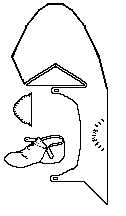
Shoes and Pattens, figures 36&94 (BC 72 [50] <3777/1> Dock Construction, c1330-50) This shoe has a simple binding stitch around the the upper edge, the sole is cow, the upper calf, the heel cap calf..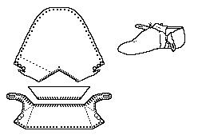
Shoes and Pattens, figures 37&95 (BC 72 [250] <4053> Dock Construction, c1330-50) This shoe has a simple binding stitch around the the upper edge, the sole is cow, the upper is calf, the heel stiffener is calf..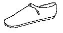
Thomas (78/51/54) This is a simple child's shoe, it has a binding stitch around the upper edge, a rand, and a heel stiffener.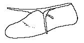
Platt (2141 Cuckoo Lane (Late 13th Century)) This shoe differs from the others in that the shoe ties in front, rather than closing with a latchet.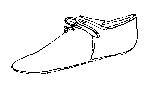
Goubitz (Shoentype 5 (c1275-1425)) This shoe has a topband. Note the shape and attachment of the tongue.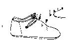
(Halbschue (c1250-c1400)) This shoe has a topband. Note the lack of tongue.The double toggle latchet ankle shoe can be seen in
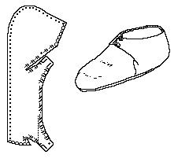
Shoes and Pattens, figures 32&92 (SWA 81 [2078] <4969> c1270-79) This shoe has a simple binding stitch around the the upper edge, the upper is unidentifiable, the toggle is calf..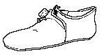
Goubitz (Shoentype 5 (c1275-1425)) This shoe has a topband. Note the shape and attachment of the tongue.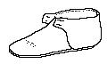
Sweetman. A number of these shoes were found. There is some sign of a binding stich, but little else. There is no tongue, the upper is calf.The triple toggle latchet ankle shoe can be seen in
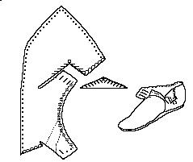
Shoes and Pattens, figures 33&91 (SH 74 [389] <113> Waterfront IV c1250) This shoe has a simple binding stitch around the the upper edge, the upper is calf..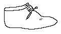
(Halbschue (c1250-c1400)) This shoe has a topband. Note the lack of tongue.There are several forms of latchet attachments found in the examples, for example in Shoes and Pattens, and The Bryggen Papers:
Footwear of the Middle Ages - Historical Shoe Designs/Number 36, by I. Marc
Carlson. Copyright 1996, 1999
This page is given for the free exchange of information, provided the Author's Name is
included in all future revisions, and no money change hands, other than as expressed in
the Copyright Page.